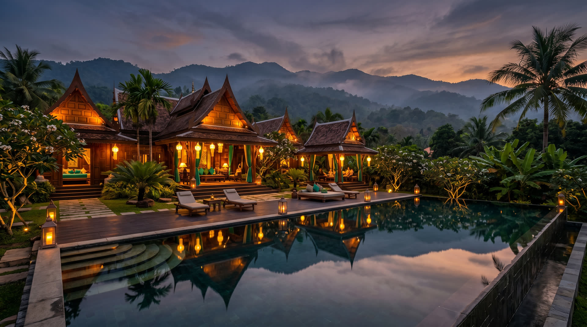
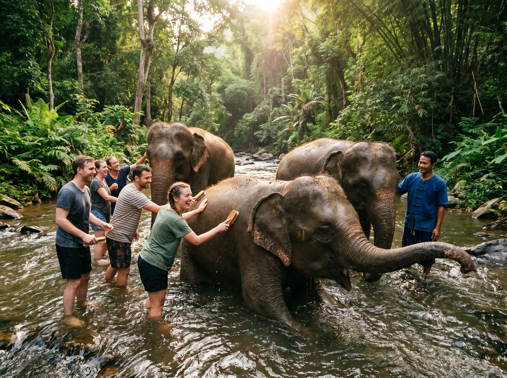
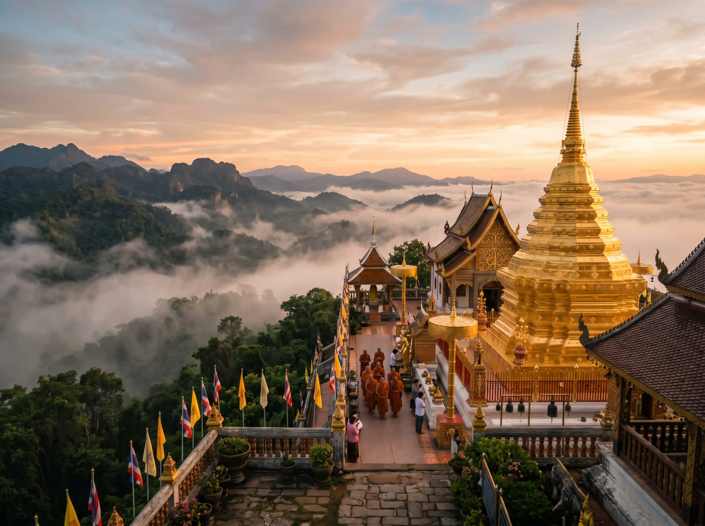
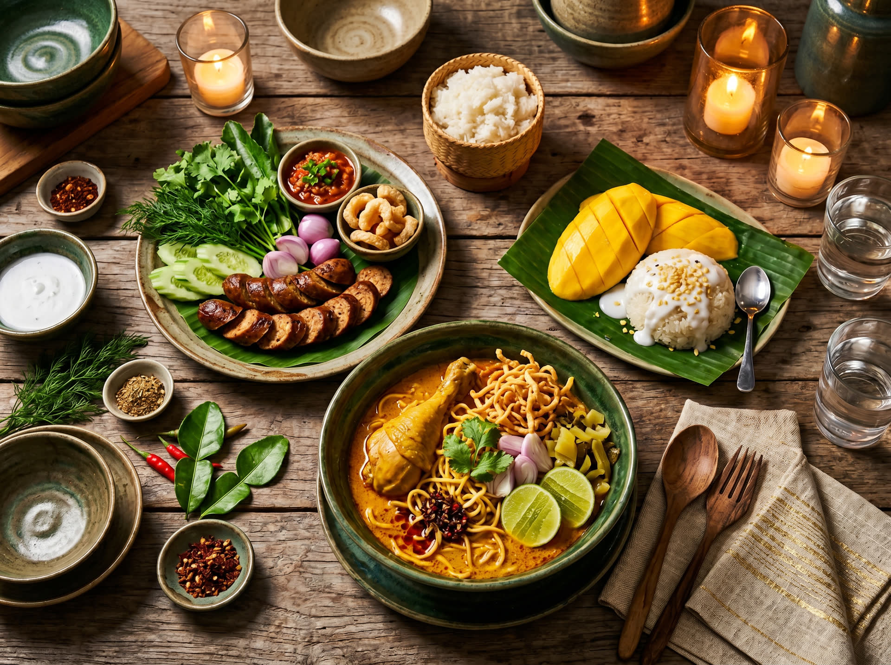
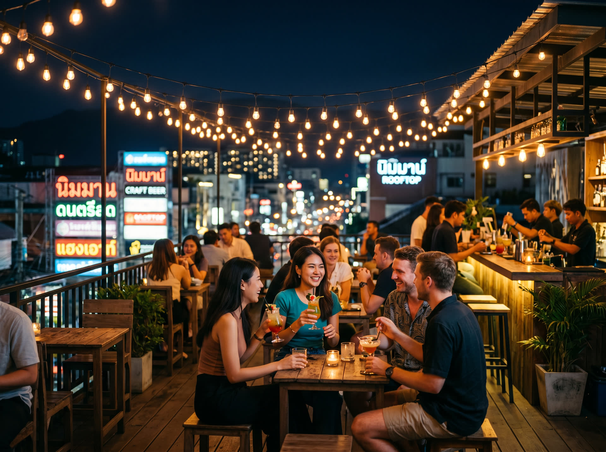

去程 · Outbound
6月10日 · 週三
16:50
HKG · T1
香港
2 小時 50 分
直航 · Nonstop
18:40
CNX
清邁

來回均由 HK Express 執飛，直航約 2 小時 50 分，出發及回程同由香港國際機場 T1。
清邁 6 月是雨季開始 — 白天悶熱、傍晚或夜晚下短陣雨，遊客少、Villa 淡季價，山林最青翠。 我們把重心放在「包一整棟 Pool Villa 玩到盡」，搭配選擇性的探險日和夜蒲日。
6 月 26–33°C，傍晚短陣雨為主，早上最適合戶外。山林特別翠綠，景色反而比旱季美。
已訂 HK Express UO744 / UO755 直航。飛行 2 小時 50 分，6/10 晚上 18:40 抵達清邁。6/14 晚上 23:15 回到香港。
香港特區護照 免簽 60 天（2024 年 7 月起政策），入境不需申請。
建議預訂 12 人 Minivan 包車（約 THB 3,000–4,500/日），市區用 Grab。
四天分別有不同主題 — 抵達 Villa 夜、探險日、文化美食夜蒲日、放鬆派對日。全部可根據大家當日狀態微調。
HK Express UO744 · 16:50 香港起飛，18:40 抵達清邁。Check-in Villa 後叫私人廚師上門做泰北晚餐，泳池邊 BBQ 開瓶香檳，第一晚溫柔地進入清邁節奏。
起飛前 2.5 小時集合辦理登機。HK Express 建議提早網上 Check-in 打印登機證，過關後可喺禁區食個輕餐。
HK Express 直航，飛行時間 2 小時 50 分。廉航無免費餐飲，建議上機前食飽或預訂機上套餐。
落地後過關領行李約 19:30。預訂 12 人 Minivan 接機直達 Villa，機場到市郊 Villa 車程約 15–25 分鐘。
領 keycard、分配房間、welcome drink。私人廚師（Cozymeal / Take a Chef）已預先到 Villa 準備 khao soi、sai ua 泰北香腸、芒果糯米飯，配合池畔 BBQ。12 人每人約 THB 1,800–2,500。
Cozymeal 預訂開香檳、放音樂、分組打牌。部分 Villa 有桌球檯、卡拉 OK、電動機，第一晚唔會悶。
全日戶外冒險：上午去大象保育園餵大象洗泥漿浴，中午泰式午餐，下午 ATV 越野＋白水漂流。回 Villa 泡池放鬆，叫 SPA 上門。

由 Villa 接送出發，車程約 1.5 小時到山區營地。沿途可看湄登河谷景色。
當地營地泰北 buffet：Pad Thai、咖喱、水果。素食可提前告知。
200cc ATV 穿越山野，完整裝備與教練。白水漂流在湄登河進行，中級難度，老手新手都可以。
預訂 Fah Lanna Spa 外送服務，12 位專屬按摩師到 Villa 做 90 分鐘 Thai Massage，THB 1,500/人。
Fah Lanna Spa 預訂叫 Grab Food 送泰國菜、比薩、台式珍奶。今天累了，早啲瞓。
早上上雙龍寺（Doi Suthep）避開日頭，下午 Villa 放鬆，晚上米其林推薦晚餐，夜蒲寧曼路最人氣的 Zoe in Yellow 和 Spicy。

清邁的地標金色寺廟，沿 306 級階梯上山或坐纜車。清晨人少涼爽，山上可俯瞰全清邁。
叫 Grab Food 或預訂 catering 到 Villa。泳池繼續 chill。
想逛街的可去 One Nimman 或 Central Festival Mall；想放鬆的留 Villa 睡午覺。
Friend's Table 是米其林指南 chef's table（19:00 準時開餐）。Le Crystal 是平河畔的法泰 fusion 老牌。兩間都建議提前 1 週訂位。
Friend's Table 米其林介紹整天泡池、打麻將、桌球。下午逛 Wualai 週六夜市，晚上可選 Miracle 人妖秀，回 Villa 開最後一晚派對。

叫 Villa 管家準備 breakfast platter，慢慢食。全日無行程，你想點玩都得。
愛打球可去 Alpine Golf Resort；想看泰拳可預訂 Thapae Stadium VIP；想避暑可去 Mae Sa Waterfall。
清邁最地道的街市，手作工藝、街頭小食、Live Music。建議 5–7 點去，可找到最齊的手信。
回 Villa 開最後一晚，池畔香檳、浮床音響、煙花棒拍照。睡不睡都隨便。
UO755 · 19:25 清邁起飛，23:15 落地香港 T1。回程係夜機，日頭仲可以慢慢收拾，食個 farewell lunch，嘆埋最後一泡泳池先出發。

慢食早餐，收拾行李，拍最後一組全團合照。
大部份 Villa check-out 時間為 11:00–12:00，可預訂管家做 farewell lunch 或去 Warorot Market 食最後一餐泰北菜。確認無欠帳、領回押金。
仲有半日時間，可去 Warorot Market 買手信芒果乾／泰國零食、做個腳底按摩、或喺 Nimman 咖啡店 chill 到出發。
Villa 到機場車程 15–25 分鐘。起飛前 2 小時到機場辦理 Check-in，過關後可喺 CNX lounge 或免稅店再買多少少。
HK Express 直航，飛行時間 2 小時 50 分。23:15 抵達香港 T1，過關領行李後約 23:50，記得預早約的士或叫 Uber 回家。
全部可容納 12 人，私人泳池，最多房間獨立衛浴。依位置、設施和派對適合度排序，首推「Lanna Kamin」玩樂功能最齊。
注意：以上價錢為 2026 年 6 月（淡季）參考價，實際價格須打開連結當下查看。6 月是雨季淡季，部分 Villa 會有 15–30% 折扣。建議至少提前 2 個月預訂，並直接聯絡屋主爭取團體優惠。
以下是每個建議節目的參考價格和直接報價網頁連結。12 人團通常可爭取 5–10% 折扣，直接聯絡供應商更易談。
12 位專業按摩師到 Villa 做 90 分鐘傳統 Thai Massage / Oil Massage。需提前 24 小時預訂。
Fah Lanna 預訂以下為淡季參考總額（港幣），機票另計。Villa 按首推 Lanna Kamin 計。實際金額視訂房時段、餐廳選擇而浮動。
| 項目 | 說明 | 預算 (HKD) |
|---|---|---|
| Villa 包棟 × 4 晚 | Lanna Kamin 或同級 | 48,000 – 72,000 |
| 私人廚師 × 1–2 晚 | Cozymeal 上門 | 4,700 – 9,400 |
| 大象 + ATV + 漂流 | 12 人一日團 | 6,500 |
| 米其林晚餐 × 1 | Friend's Table 或 Le Crystal | 7,300 – 9,000 |
| SPA 按摩上門 | Fah Lanna 12 人 | 3,900 |
| 夜生活酒水 × 2 晚 | Zoe + Spicy + 人妖秀 | 5,500 – 8,000 |
| Minivan 包車 × 4 日 | 含機場接送 | 3,600 – 5,500 |
| 其他雜項 | 門票、手信、小費 | 5,000 – 8,000 |
| 總計（住宿＋當地） | 84,500 – 122,300 | |
| 人均（12 人分） | 7,040 – 10,190 | |
機票已訂：HK Express UO744（6/10 去程）+ UO755（6/14 回程）經濟艙直航，不包括在以上預算內。廉航記得額外計行李託運費，每人約 HK$200–400。
泰銖 THB，HK$1 ≈ THB 4.5。建議帶少量現金，其他用信用卡或 Grab Pay。ATM 遍佈市區。
220V，插頭 Type A / B / C 混用。建議帶多用轉插。
AIS / dtac / TrueMove 機場買 旅遊 SIM 約 THB 300（7–15 日無限流量）。亦可用 eSIM。
按摩 THB 50–100、餐廳服務費已含則免、Grab 不強制。Villa 管家離開前給 THB 500–1,000。
短袖短褲為主，晚上山區或冷氣房要薄外套。雨季帶 輕便雨衣或摺傘，進寺廟要覆蓋膝蓋和肩膀。
腸胃藥、蚊怕水（6 月蚊多）、防曬霜 SPF50+、止痛藥、暈車藥。
泰國比香港 慢 1 小時（UTC+7）。
旅遊警察 1155（英語）、救護車 1669、香港駐泰領事館 +66 2 508 0051。